판독 · 서식
초음파 판독 프로토콜 — Prostate·Echo·HB·Carotid·Thyroid·LN
장기별 초음파 판독 서식과 TIRADS·PSA 추적 프로토콜 정리
전립선 초음파 계측 (Prostate sono dimensions)
Anteroposterior diameter는 Horizontal scan에서 측정할 수도 있으나, 최대 길이를 찾아야 한다. 이는 다소 부정확하며, 가이드라인은 세로 스캔(vertical scan)에서 재는 것을 기준으로 한다.
Vertical scan에서 posterior prostate가 가려지는 경우에는 para-sagittal view로 살짝 비틀어 보기(tilting)와 TGC 조절을 시도한다. 그래도 posterior margin이 불분명하면 억지로 sagittal에서 추정하여 재는 것보다는 horizontal(transverse) scan에서 가장 잘 보이는 단면을 찾아 AP diameter를 측정하고, 차트에 "Measured in Transverse view due to poor visualization"이라고 남기는 것이 임상적으로 더 정직하고 안전한 방법이다.
낭성·고형 병변의 위험도 판정
- Hypoechoic portion이 있어도 cystic lesion이 섞여 있으면 C3, suspicious finding이 있으면 C4.
- Mixed solid면 predominant portion을 따진다.
- Cystic+solid면 solid의 색조(echogenicity)와 무관하게 C3. 즉 echogenicity로는 C3에서 시작하고, worrisome feature로 레벨업을 판단하며, echogen은 worrisome feature가 아니다.
- Entirely/rim calcification은 C4.
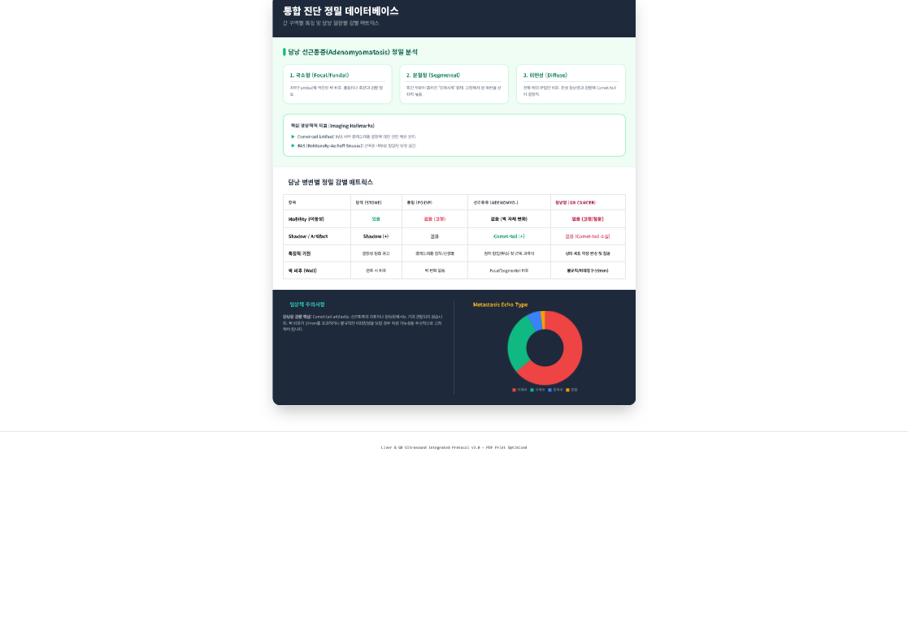
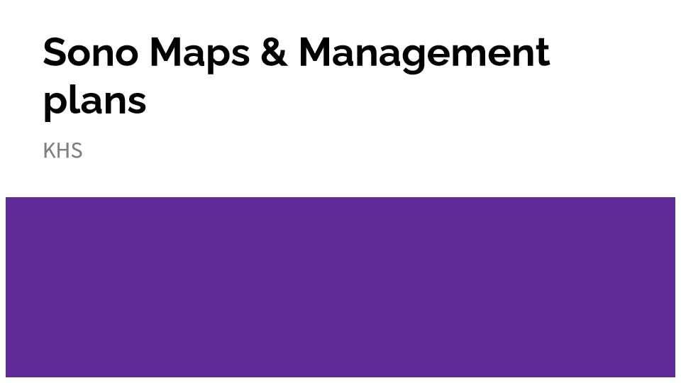
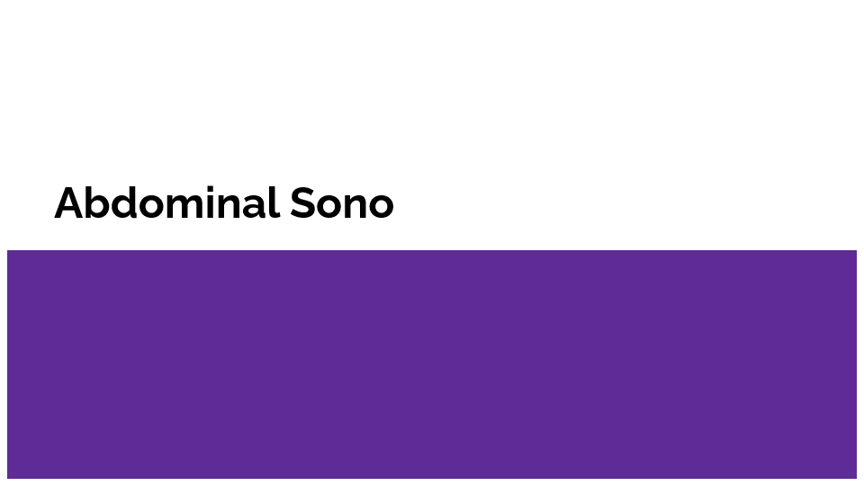
HB sono DDx protocol
심초음파 판독 (Echo wall segments and vessel territory)
판독지 양식
CV Sx : Dyspnea(rest) / DOE / Chest discomfort -/-(NYHA)/-
Hx : HTN / Dyslipidemia / DM / Other history (MI, CABG, ...) -/-/-
Assessment
- Systolic function : EF % by 2D
- RWMA : -
- Diastolic function : Normal / Grade I / Grade Ia / Grade II / Grade III
- E/A
- e`
- E/e`
- Valvular disease
- MV : MVA (by CE) / Regurg flow - (VC : , EROA : )
- AV : AV Vmax, PG / Regurg flow - (VC : , EROA : )
- Vascular assessment
- Carotid sono > 별도 시행 예정
- Aortic size (Sinus of valsalva) : cm, without sign of Aortic dissection(flaps, abnormal doppler, etc)
- Pericardial assessment : Agenesis / Effusion / thickening -/-/-
Conclusion
impression)
rec)
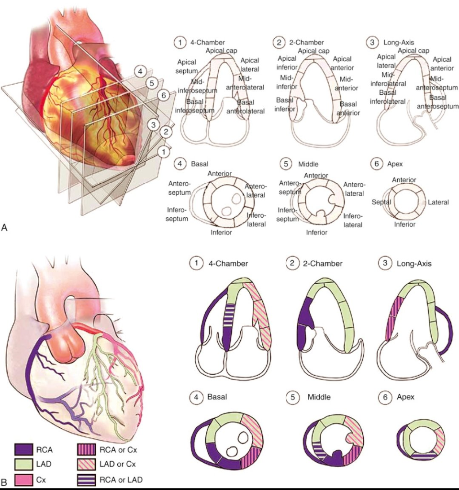
간·담도·췌장·비장 초음파 판독지 (Hepatobiliary, Pancreas, Spleen US)
Previous HB sono > / conclusion :
1. Liver
- 1) Parenchymal echogenecity & outer margin, IHBD : N/S
- 2) Mass (위치, 크기, 내부양상) : N/S
- 3) Portal vein & extrahepatic bile duct : N/S
2. GB
Cholecystectomy state? (-, no OP Hx)
N/S
3. Pancreas
N/S
4. Spleen
N/S
5. Kidney
N/S
imp) Nonspecific finding
rec) regular f/u
Bosniak classification (신장 낭성 병변)
| Bosniak 분류 | 영상 소견 | 악성 위험도 (2019년 개정판) | 추적관찰/치료 |
|---|---|---|---|
| I |
| 0% | 추적관찰 불필요 |
| II |
| 9% (95% CI: 5-17%) | 추적관찰 불필요 |
| IIF |
|
|
|
| III |
| 80% (95% CI: 71-87%) | 부분신절제술 또는 수술 고위험군에서 고주파절제술 |
| IV |
| 88% (95% CI: 83-91%) | 부분 또는 전체 신절제술 |
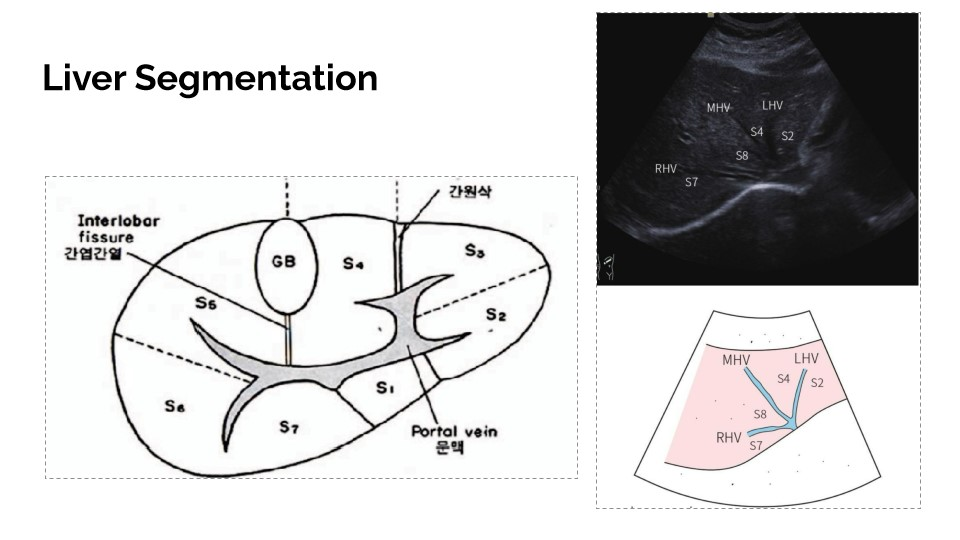
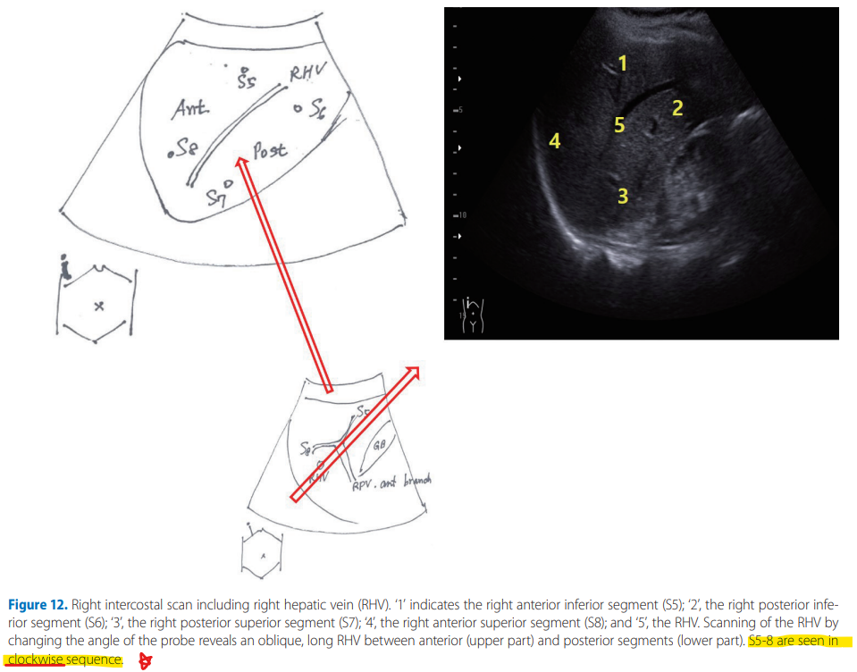
경동맥 초음파 판독지 (CAROTID sono)
Previous sono > / conclusion :
1. Rt carotid
- Rt subclavian A와 CCA 접합부(lower bifur) : unremarkable
- Rt CCA : unremarkable
- Rt bulb : unremarkable
- Rt ICA : unremarkable
- Rt ECA : unremarkable
2. Lt carotid
- Lt CCA : unremarkable
- Lt bulb : unremarkable
- Lt ICA : unremarkable
- Lt ECA : unremarkable
Imp) n/s, increased IMT, carotid plaque
Rec) Lipid profile check, Regular f/u, Tx. underlying dz
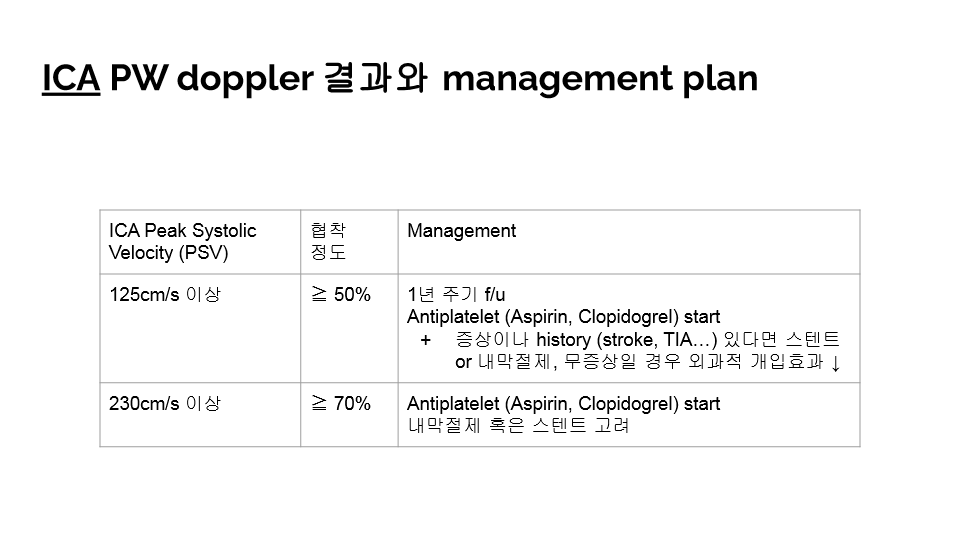
전립선 초음파 판독지 (Prostate Sono)
Previous sono > / conclusion :
LUTS : Freq(낮 8회 이상) / Urgency(하루 1회 이상) / Nocturia(2회 이상) / Incontinence -/-/-/-
- Bladder : wall thickening이나 내부 mass lesion 없음
- Prostate : normal parenchymal
- Size : * * cm
- Volume : ml
imp) N/S
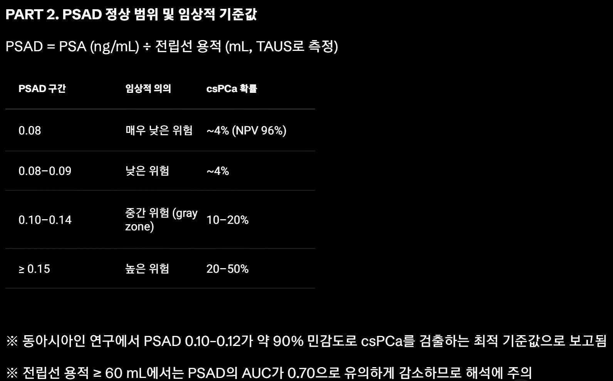
갑상선 초음파 판독지 (Thyroid sono)
Previous sono > / conclusion :
Thyroid, US
- Thyroid gland size와 echo pattern에 abnormality 없음. Color doppler signal이 정상임.
- Rt thyroid
- Lt thyroid 이상소견 없음
- Isthmus 이상소견 없음
- Pathologic cervical LAP 없으며 bilateral submandibular & parotid gland 이상 없음.
Conclusion
(K-TIRADS )
Rec) F/U
2021 K-TIRADS FNA Ix (개정)
- TIRADS C3 : 2.0cm 이상
- C4 : 1~1.5cm 이상
- C5 : 0.5~1cm 이상
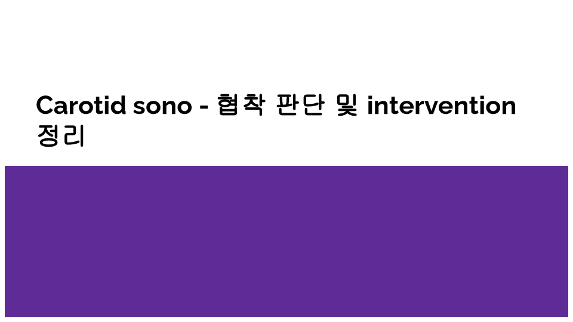
경동맥 플라크의 정의와 치료 (Plaque w/u)
다음 중 하나에 해당할 때 플라크로 정의한다.
- 혈관 내강으로 돌출된 국소적 두꺼워짐(Protuberant plaque), 또는
- 혈관벽 전체의 확산성 두꺼워짐으로서 해당 부위의 carotid intima-media thickness(CIMT)가 1.5 mm 이상(Diffuse plaque)
일부 가이드라인에서는 주변 CIMT 대비 50% 이상 두꺼워진 국소 병변이나, 0.5 mm 이상 돌출된 병변도 플라크로 인정한다.
Carotid ultrasound에서 플라크가 발견된 경우 이는 명백한 동맥경화성 심혈관질환(ASCVD)으로 간주되며, 최근 미국 및 유럽 가이드라인에서는 LDL 콜레스테롤을 70 mg/dL 이하로 낮추는 것이 타당하다고 권고한다. 특히 심혈관 위험도가 매우 높거나 플라크가 다발성(예: 3개 이상)인 경우에는 더욱 강력한 LDL-C 저하가 필요하다.
→ Plaque(IMT 1.5mm 이상 혹은 국소적 돌출됨) 시 고강도 Statin start
갑상선 TIRADS 위험도 점수 체계
갑상선 TIRADS(Thyroid Imaging Reporting and Data System)에서 각 위험도는 초음파 소견을 기반으로 판단한다. 결절의 조성(composition), 음영(echogenicity), 형태(shape), 경계(margin), 그리고 내부 에코성 병변(echogenic foci)의 다섯 가지 항목을 평가하며, 각 항목별로 점수를 부여하고 이 점수의 합에 따라 위험도를 결정한다.
항목별 점수
- 조성 : 낭성/스펀지형(0점), 혼합성(1점), 고형(2점), 완전 고형(2점)
- 음영 : 무에코(0점), 등/고에코(1점), 저에코(2점), 매우 저에코(3점)
- 형태 : 넓이가 높이보다 크거나 같은 경우(0점), 높이가 넓이보다 큰 경우(3점)
- 경계 : 매끈함(0점), 미세분엽/불규칙(2점), 외연 침범(3점)
- 내부 에코성 병변 : 없음/거대석회화(0점), 주변 석회화(2점), 미세석회화(3점)
점수 합산에 따른 분류
- TR1 (0점, 양성)
- TR2 (2점 이하, 아주 저위험)
- TR3 (3점, 저위험)
- TR4 (4~6점, 중간위험)
- TR5 (7점 이상, 고위험)
점수가 높을수록 악성 위험도가 증가한다. 이 분류는 미국영상의학회(ACR)에서 제시한 체계로, 초음파 소견의 조합을 통해 객관적으로 위험도를 평가한다.
등급별 FNA 및 추적 권고
TR1 (양성)
FNA는 권고되지 않는다. 추적 초음파도 필요하지 않다.
TR2 (아주 저위험)
FNA는 권고되지 않는다. 추적 초음파도 필요하지 않다. 단, 일부 연구에서는 2.5cm 이상일 때 추적을 고려할 수 있다.
TR3 (저위험)
- 1.5cm 이상에서 FNA를 고려한다.
- 1.0~1.4cm에서는 FNA는 권고되지 않으며, 추적 초음파는 1, 3, 5년에 시행한다.
- 1.5cm 이상이지만 FNA를 시행하지 않은 경우에도 추적 초음파를 시행한다.
TR4 (중간위험)
- 1.0cm 이상에서 FNA를 권고한다.
- 0.5~0.9cm에서는 FNA는 권고되지 않으며, 추적 초음파는 1, 3, 5년에 시행한다.
- 특히 1cm 미만이라도 임상적으로 고위험(예: 가족력, 방사선 노출, 림프절 전이 의심, 침습적 위치 등)이면 FNA를 고려할 수 있다.
TR5 (고위험)
- 1.0cm 이상에서 FNA를 강력히 권고한다.
- 0.5~0.9cm에서는 FNA는 권고되지 않으나, 임상적으로 고위험이면(예: 림프절 전이, 침습적 위치, 수술적 접근이 필요한 경우) FNA를 고려할 수 있다.
공통 원칙
- 추적 초음파는 1, 3, 5년에 시행하며, 크기 변화나 임상적 변화가 있으면 FNA를 재고한다.
- 모든 등급에서 림프절 전이 의심 소견이 있으면 크기와 무관하게 FNA를 시행한다.
- 추적 초음파의 간격은 일반적으로 1년 후 첫 추적, 이후 2~3년 간격으로 시행하며, 크기 변화(20% 이상, 최소 2mm 증가)나 새로운 임상적 위험인자 발생 시 FNA를 재고한다.
결절 위험도별 추적 간격
- 고위험 결절(TR4-TR5) : 6-12개월
- 낮은-중등도 위험 결절(TR3) : 12-24개월
- 매우 낮은 위험 결절(TR2) : ≥24개월 (추적이 필요한 경우)
- 양성 결절(TR1) : 추적 불필요
FNA를 시행하지 않은 상태에서는 C4는 6개월, 나머지는 검진 때마다 추가로 추적한다.
참고문헌
Durante C, Grani G, Lamartina L, et al. The Diagnosis and Management of Thyroid Nodules: A Review. JAMA. 2018;319(9):914–924. doi:10.1001/jama.2018.0898.
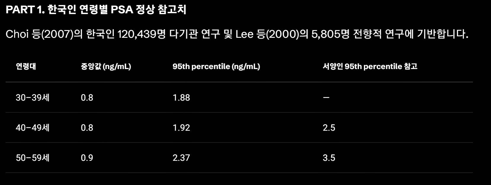
PSA 수치별 추적 간격 (NCCN guideline)
- PSA 1 ng/mL (45–70세) : 2–4년 간격으로 재검
- PSA 1–3 ng/mL (45–70세) : 1–4년 간격으로 재검
- PSA ≥3 ng/mL (일반 위험군) 또는 ≥4 ng/mL (>75세) : Uro Refer for further evaluation
- 75세 이상, PSA 3 ng/mL : 스크리닝 중단 또는 간격 연장 고려
일본 가이드라인
- PSA under 1 : f/u q3yr
- PSA over 1 : annual f/u
검색 태그용 색인 (Segmentation maps)
- 충수돌기 appendix 표준영상
- Echo RAP estimation
- RVSP = PVSP = RAP + 4V_TR^2
- Pancreatic cystic lesion DDx
- Bosniak classification (kidney cyst, renal cyst)
- Thyroid sono f/u schedule
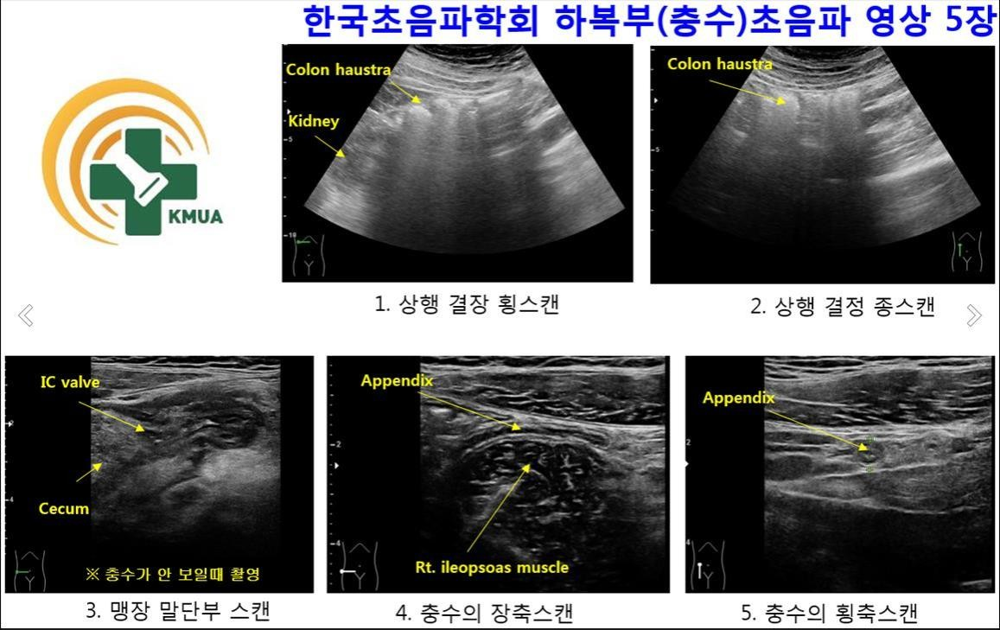
갑상선 초음파 시 경부 림프절 스캔 (cervical LN)
특히 nodule이 있으면 모두 찍는다.
- Level I > II
- IA는 미키마우스 뷰로 시작하여 hyoid bone이 보이게 한다.
- IB는 SMG가 보이게 mandible에 probe를 평행하게 둔다.
- II는 IB보다 lateral하게(귀 뒤까지), SCM post border부터 내려와서 CCA bulb level까지 본다. Carotid sono 하듯이 CCA를 찾고 올라가서 bulb까지 본다. 귀 뒤 mastoid process부터 bulb까지가 II이다.
- II, III, IV에서는 전체 SCM을 본다.
- Bulb를 보고 아래로 쭉 내리면 III, 내리다가 thyroid가 나오면 거기서부터 clavicle까지가 IV(thyroid보다 lateral하게 있는 fascia와 fat plane에 있음).
- IV에서 lateral하게 SCM을 따라 ~TPZ(결이 다른 근육; 결이 사선으로 나 있는 근육)가 나오면 그 사이가 V → 귀 뒤까지.
- Level VI는 목 중앙으로 와서 clavicle level에서 hyoid까지 쭉 올리면서 찍는다.
- I, II는 1cm 정도 되면서 round한 정상 node가 많다. 여기 말고는 정상 node는 대부분 1cm 이하이다.
- 특히 Level II에 커다란 sentinel LN이 있다. Doppler 등으로 malignancy를 평가한다.
- Level II > III > IV, 그리고 Level V, VI.
Malignancy 감별
- Round할 수록, 클수록, hilum이 없을수록, doppler signal이 peripheral하게 찍힐수록 malignancy 가능성 높음.
- Oval할수록, 작을수록, hilum이 잘 보일수록, hilar doppler signal > peripheral일수록 benign 가능성 높음.
Malignancy 감별
림프절 및 침샘의 흔한 양성 질환 (Common Benign diseases of LNs and salivary glands)
| 구분 | Kimura's Dz | Kikuchi's Dz |
|---|---|---|
| Main Sx | Parotid gland 위주의 무통성 종괴 + LNE (Clinical Triad : Firm painless nodules, Eosinophilia, IgE 증가) | 발열, 통증(Td)을 동반하는 C-LNE + flu-like Sx |
| Self limited? | No — 수술 필요(parotidectomy). Chronic inflammatory, slowly progressive | Yes, DDx with reactive LNs. Self limited over 1~4 mo, supportive care |
| 인종, 나이, 연령 | 청~중년, 남성 우세 | 청~중년, 여성 우세 |
Salivary gland
- Salivary : hypoechoic하면 malignancy 감별.
- Parotid에서 m/c 감별해야 하는 3개의 glandular tumor : Pleomorphic adenoma, Warthin tumor, Lymphoma.
- Recommend for : Neck CT, FNAB
Inflammatory disease
Reactive LNs 등 염증성 질환과의 감별이 필요하다.